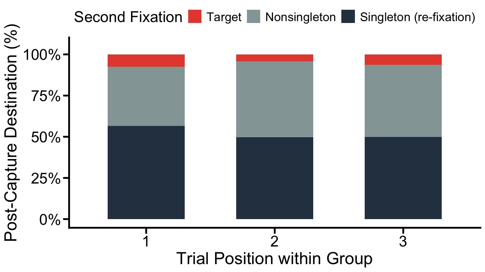
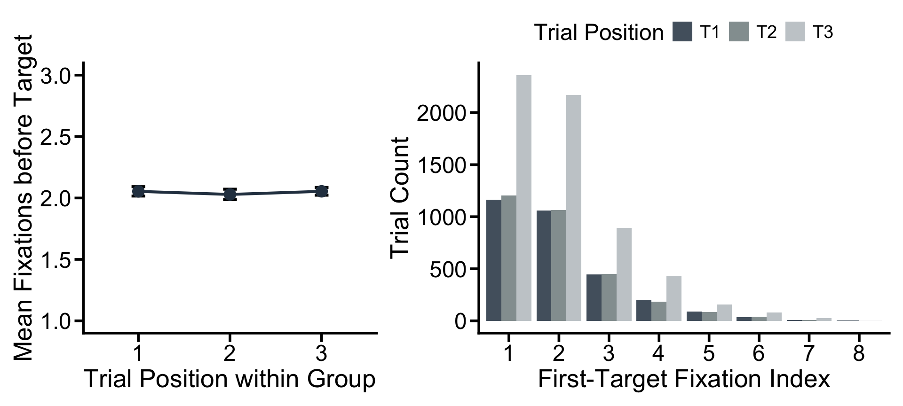

The projects should be numbered consecutively (i.e., in the order in which you began them), and should include for each project a description of the goal, the product (computer program, hand graph, computer graph, etc.), the data, and some interpretation. Reports must be reproducible and of high quality in terms of writing, grammar, presentation, etc.
The last two portfolios established that target first-fixation rate is robustly above chance throughout the three-trial suppression learning sequence but completely unmodulated by it. Singleton capture falls sharply from trials 1 to 3; target fixation rate does not rise. This may suggest that suppression is purely inhibitory - it removes the singleton’s oculomotor priority without redistributing attention toward the goal.
But the analyses so far have looked at only one moment in each trial - the very first fixation. A full trial contains an entire sequence of eye movements as the participant scans the display, gets captured, recovers, and eventually finds the target. Two questions that no prior analysis can answer:
First, when the eye is captured by the singleton distractor, does suppression learning help participants escape more efficiently? If participants on trial 3 are better at immediately redirecting to the target after being trapped (compared to trial 1), that would suggest suppression reshapes not just whether capture happens, but the recovery dynamics that follow. Conversely, if post-capture recovery is constant across trial positions, it means suppression acts only at the initial decision stage, with no downstream influence once the eye has already landed on the wrong item.
Second, does suppression learning make the overall search path more efficient? Fewer fixations needed to reach the target would indicate that deprioritizing the singleton streamlines the entire scan sequence. A flat result would suggest that the search process after the first saccade unfolds identically regardless of whether the participant is on trial 1 (unsuppressed) or trial 3 (fully suppressed).
Together, these two questions test where in the oculomotor hierarchy suppression learning operates. If both are null (post-capture recovery unchanged, fixation count to target unchanged), the conclusion is a sharp mechanistic one: suppression learning is exclusively a pre-saccadic phenomenon, operating during the initial motor planning period while the eye is still at the central fixation point. Once the eye leaves centre, everything that follows is identical across the learning arc. The mechanism does not make search smarter or faster; it simply prevents misdirection at the very first step. In this way, it is reasonable to infer that what participants learn in the process of distractor suppression is - more prepared (or more ready) to move their eyes for the first search.
This portfolio examines the full within-trial fixation sequence in the search task to test whether suppression learning reshapes eye movement behavior beyond the first saccade. Two specific goals are pursued:
Post-capture recovery: On trials where the first fixation is captured by the singleton, does the probability of immediately redirecting the eye to the target on the next fixation increase across Trials 1 to 3? If so, suppression learning improves not just capture avoidance but also recovery efficiency once captured. If not, recovery behaviour is independent of suppression state.
Search efficiency: Does the number of fixations required to reach the target decrease across Trials 1 to 3? If suppression learning streamlines the overall scan path, participants should reach the target more directly on Trial 3 than on Trial 1. If the fixation count is flat, the benefit of suppression is confined entirely to the first saccade.
# Identical to previous portfolio
rm(list = ls())
setwd("~/Documents/GitHub/DS4P_Portfolio")
library('NickPsych')
library('tidyverse')
library('reshape2')
library('writexl')
library('dplyr')
library('bruceR')
library('openxlsx')
library('knitr')
library('xtable')
library('patchwork')
# Load preprocessed data
accdata <- read.csv("/Users/mumizz./Desktop/2025-2026/Courses/Data science for psych/Experiment3/Analysis Script/accdata.csv")
trimdata <- read.csv("/Users/mumizz./Desktop/2025-2026/Courses/Data science for psych/Experiment3/Analysis Script/trimdata.csv")
# Plot theme (matching manuscript style)
axis_text_size <- 20
axis_tick_text_size <- 18
graph_color <- "black"
axis_tick_length <- 0.25
axis_tick_units <- "cm"
axis_thickness <- 1
manuscript_theme <- theme_classic() +
theme(
axis.line = element_line(linewidth = axis_thickness, colour = graph_color),
axis.title = element_text(size = axis_text_size),
axis.text = element_text(colour = graph_color, size = axis_tick_text_size),
axis.ticks = element_line(linewidth = axis_thickness, colour = graph_color),
axis.ticks.length.y = unit(axis_tick_length, axis_tick_units),
axis.ticks.length.x = unit(axis_tick_length, axis_tick_units),
legend.position = "top",
text = element_text(size = axis_tick_text_size)
)To address these questions we need the full fixation sequence per
trial. The variable search_full is constructed from
trimdata retaining all saccade indices (saccindex 0–10),
filtered to good formal search trials for included subjects - the same
population as all prior analyses, but with the saccindex == 1
restriction lifted.
# Create Search_full
subj <- unique(accdata$subjnum)
search_full <- trimdata %>%
filter(subjnum %in% subj,
phase != "practice",
ACC == 1,
keepRT == 1,
brokeFixation != 1,
searchArray == "search") %>%
mutate(newtrial = ((trial - 121) %% 3) + 1,
trial_group = (trial - 121) %/% 3)
summary(search_full)## CURRENT_FIX_DURATION CURRENT_FIX_INDEX CURRENT_FIX_X CURRENT_FIX_Y
## Min. : 2 Min. : 1.000 Min. : 361.8 Min. : -3.6
## 1st Qu.: 140 1st Qu.: 1.000 1st Qu.: 895.9 1st Qu.: 423.0
## Median : 186 Median : 2.000 Median : 957.1 Median : 537.3
## Mean : 218 Mean : 2.669 Mean : 955.7 Mean : 542.6
## 3rd Qu.: 265 3rd Qu.: 4.000 3rd Qu.:1016.9 3rd Qu.: 668.5
## Max. :1632 Max. :11.000 Max. :1623.4 Max. :1934.3
##
## PREVIOUS_SAC_START_TIME ACC L1_ID L1_col
## Min. :-125.0 Min. :1 Length:47350 Length:47350
## 1st Qu.: 226.0 1st Qu.:1 Class :character Class :character
## Median : 378.0 Median :1 Mode :character Mode :character
## Mean : 445.9 Mean :1
## 3rd Qu.: 588.0 3rd Qu.:1
## Max. :1873.0 Max. :1
## NA's :12063
## L1_shape L2_ID L2_col L2_shape
## Length:47350 Length:47350 Length:47350 Length:47350
## Class :character Class :character Class :character Class :character
## Mode :character Mode :character Mode :character Mode :character
##
##
##
##
## L3_ID L3_col L3_shape L4_ID
## Length:47350 Length:47350 Length:47350 Length:47350
## Class :character Class :character Class :character Class :character
## Mode :character Mode :character Mode :character Mode :character
##
##
##
##
## L4_col L4_shape L5_ID L5_col
## Length:47350 Length:47350 Length:47350 Length:47350
## Class :character Class :character Class :character Class :character
## Mode :character Mode :character Mode :character Mode :character
##
##
##
##
## L5_shape L6_ID L6_col L6_shape
## Length:47350 Length:47350 Length:47350 Length:47350
## Class :character Class :character Class :character Class :character
## Mode :character Mode :character Mode :character Mode :character
##
##
##
##
## LetterID RT Resp age
## Length:47350 Min. : 231 Length:47350 Min. :18.00
## Class :character 1st Qu.: 754 Class :character 1st Qu.:18.00
## Mode :character Median : 930 Mode :character Median :20.00
## Mean :1005 Mean :21.81
## 3rd Qu.:1192 3rd Qu.:25.00
## Max. :2000 Max. :31.00
##
## block brokeFixation expVers gender
## Min. : 3.00 Min. :-1 Length:47350 Length:47350
## 1st Qu.: 4.00 1st Qu.:-1 Class :character Class :character
## Median : 6.00 Median :-1 Mode :character Mode :character
## Mean : 6.41 Mean :-1
## 3rd Qu.: 8.00 3rd Qu.:-1
## Max. :10.00 Max. :-1
##
## hand searchArray singAngle singCol
## Length:47350 Length:47350 Min. : 0 Length:47350
## Class :character Class :character 1st Qu.: 60 Class :character
## Mode :character Mode :character Median :120 Mode :character
## Mean :147
## 3rd Qu.:240
## Max. :300
##
## singLoc singTargAngle subjnum targAngle
## Min. :1.00 Min. : 60.0 Min. :101.0 Min. : 0.0
## 1st Qu.:2.00 1st Qu.: 60.0 1st Qu.:112.0 1st Qu.: 60.0
## Median :3.00 Median :120.0 Median :122.0 Median :180.0
## Mean :3.45 Mean :108.6 Mean :121.6 Mean :152.6
## 3rd Qu.:5.00 3rd Qu.:120.0 3rd Qu.:131.0 3rd Qu.:240.0
## Max. :6.00 Max. :180.0 Max. :142.0 Max. :300.0
##
## targCol targID targLetter targLoc
## Length:47350 Length:47350 Length:47350 Min. :1.000
## Class :character Class :character Class :character 1st Qu.:2.000
## Mode :character Mode :character Mode :character Median :4.000
## Mean :3.544
## 3rd Qu.:5.000
## Max. :6.000
##
## targShape taskType trial SRT
## Length:47350 Length:47350 Min. :121.0 Min. :-132.0
## Class :character Class :character 1st Qu.:233.0 1st Qu.: 219.0
## Mode :character Mode :character Median :351.0 Median : 371.0
## Mean :355.1 Mean : 438.9
## 3rd Qu.:477.0 3rd Qu.: 581.0
## Max. :600.0 Max. :1866.0
## NA's :12063
## Dwell phase currloc curritem
## Min. : 2 Length:47350 Min. :1.00 Length:47350
## 1st Qu.: 140 Class :character 1st Qu.:2.00 Class :character
## Median : 186 Mode :character Median :4.00 Mode :character
## Mean : 218 Mean :3.47
## 3rd Qu.: 265 3rd Qu.:5.00
## Max. :1632 Max. :6.00
## NA's :2
## saccindex numfix normX normY
## Min. : 0.000 Min. : 0.000 Min. : 348.2 Min. :-671.3
## 1st Qu.: 0.000 1st Qu.: 2.000 1st Qu.: 926.5 1st Qu.: 280.7
## Median : 1.000 Median : 3.000 Median : 959.8 Median : 433.7
## Mean : 1.631 Mean : 3.284 Mean : 958.2 Mean : 437.9
## 3rd Qu.: 2.000 3rd Qu.: 4.000 3rd Qu.: 991.7 3rd Qu.: 555.7
## Max. :10.000 Max. :10.000 Max. :2108.1 Max. :1340.0
##
## normcurrloc keepRT goodTrials newtrial trial_group
## Min. :1.000 Min. :1 Min. :1 Min. :1.000 Min. : 0.0
## 1st Qu.:1.000 1st Qu.:1 1st Qu.:1 1st Qu.:2.000 1st Qu.: 37.0
## Median :2.000 Median :1 Median :1 Median :3.000 Median : 76.0
## Mean :2.588 Mean :1 Mean :1 Mean :2.258 Mean : 77.6
## 3rd Qu.:4.000 3rd Qu.:1 3rd Qu.:1 3rd Qu.:3.000 3rd Qu.:118.0
## Max. :6.000 Max. :1 Max. :1 Max. :3.000 Max. :159.0
## # Build captured-trial dataset and identify post-capture destination
## saccindex 1 = first fixation; saccindex 2 = second
s1 <- search_full %>%
filter(saccindex == 1) %>%
select(subjnum, trial, newtrial, s1_item = curritem)
s2 <- search_full %>%
filter(saccindex == 2) %>%
select(subjnum, trial, s2_item = curritem)
## Keep only captured trials (s1 = Singleton) that also have a second fixation
post_cap <- s1 %>%
left_join(s2, by = c("subjnum", "trial")) %>%
filter(s1_item == "Singleton", !is.na(s2_item)) %>%
mutate(s2_target = as.integer(s2_item == "Target"),
s2_nonsingleton = as.integer(s2_item == "Nonsingleton"),
s2_singleton = as.integer(s2_item == "Singleton"),
newtrial = factor(newtrial))
## Overall
post_cap %>%
summarise(P_target = round(mean(s2_target) * 100, 2),
P_nonsingleton = round(mean(s2_nonsingleton) * 100, 2),
P_singleton_again = round(mean(s2_singleton) * 100, 2),
n = n()) %>%
kable(caption = "Table 5. Post-capture saccade destination (% of captured trials)")| P_target | P_nonsingleton | P_singleton_again | n |
|---|---|---|---|
| 52.14 | 41.56 | 6.3 | 1381 |
## By newtrial
post_cap %>%
group_by(newtrial) %>%
summarise(P_target = round(mean(s2_target) * 100, 2),
P_nonsingleton = round(mean(s2_nonsingleton) * 100, 2),
P_singleton_again = round(mean(s2_singleton) * 100, 2),
n = n(), .groups = "drop") %>%
kable(caption = "Table 6. Post-capture destination by trial position.")| newtrial | P_target | P_nonsingleton | P_singleton_again | n |
|---|---|---|---|---|
| 1 | 56.57 | 36.02 | 7.42 | 472 |
| 2 | 49.67 | 46.03 | 4.30 | 302 |
| 3 | 49.92 | 43.66 | 6.43 | 607 |
On trials where the first fixation landed on the singleton, we examined where the eye moved next (i.e., the second fixation). Across all participants and trial positions, 1,381 such capture trials were identified. Overall, the second fixation went to the target on 52.14% of these trials, to a nonsingleton on 41.56%, and back to the singleton on 6.30%. Broken down by trial position, P(S2 = Target | S1 = Singleton) was 56.57% on trial 1, 49.67% on trial 2, and 49.92% on trial 3.
# ANOVA on P(s2 = Target | captured) - Given the eye was just captured, where does it go next?
pct_subj <- post_cap %>%
group_by(subjnum, newtrial) %>%
summarise(p_target = mean(s2_target), .groups = "drop")
MANOVA(data = pct_subj,
subID = "subjnum",
dv = "p_target",
within = "newtrial",
sph.correction = "GG",
digits = 2) %>%
EMMEANS("newtrial")##
## * Data are aggregated to mean (across items/trials)
## if there are >=2 observations per subject and cell.
## You may use Linear Mixed Model to analyze the data,
## e.g., with subjects and items as level-2 clusters.## Warning: Missing values for 1 ID(s), which were removed before analysis:
## 135
## Below the first few rows (in wide format) of the removed cases with missing data.
## subjnum newtrial1 newtrial2 newtrial3
## # 33 135 0.8 NaN 0.8333333##
## ====== ANOVA (Within-Subjects Design) ======
##
## Descriptives:
## ──────────────────────────
## "newtrial" Mean S.D. n
## ──────────────────────────
## newtrial1 0.57 (0.22) 39
## newtrial2 0.52 (0.22) 39
## newtrial3 0.52 (0.19) 39
## ──────────────────────────
## Total sample size: N = 40
##
## ANOVA Table:
## Dependent variable(s): p_target
## Between-subjects factor(s): –
## Within-subjects factor(s): newtrial
## Covariate(s): –
## ─────────────────────────────────────────────────────────────────────
## MS MSE df1 df2 F p η²p [90% CI of η²p] η²G
## ─────────────────────────────────────────────────────────────────────
## newtrial 0.03 0.03 1.89 71.86 1.07 .344 .03 [.00, .10] .01
## ─────────────────────────────────────────────────────────────────────
## Sphericity correction method: GG (Greenhouse-Geisser)
## MSE = mean square error (the residual variance of the linear model)
## η²p = partial eta-squared = SS / (SS + SSE) = F * df1 / (F * df1 + df2)
## ω²p = partial omega-squared = (F - 1) * df1 / (F * df1 + df2 + 1)
## η²G = generalized eta-squared (see Olejnik & Algina, 2003)
## Cohen’s f² = η²p / (1 - η²p)
##
## Levene’s Test for Homogeneity of Variance:
## No between-subjects factors. No need to do the Levene’s test.
##
## Mauchly’s Test of Sphericity:
## ───────────────────────────────
## Mauchly's W p
## ───────────────────────────────
## newtrial 0.9424 .334
## ───────────────────────────────
##
## ------ EMMEANS (effect = "newtrial") ------
##
## Joint Tests of "newtrial":
## ─────────────────────────────────────────────────────
## Effect df1 df2 F p η²p [90% CI of η²p]
## ─────────────────────────────────────────────────────
## newtrial 2 38 0.884 .422 .044 [.000, .162]
## ─────────────────────────────────────────────────────
## Note. Simple effects of repeated measures with 3 or more levels
## are different from the results obtained with SPSS MANOVA syntax.
##
## Estimated Marginal Means of "newtrial":
## ─────────────────────────────────────────
## "newtrial" Mean [95% CI of Mean] S.E.
## ─────────────────────────────────────────
## newtrial1 0.566 [0.493, 0.638] (0.036)
## newtrial2 0.517 [0.447, 0.587] (0.035)
## newtrial3 0.524 [0.461, 0.587] (0.031)
## ─────────────────────────────────────────
##
## Pairwise Comparisons of "newtrial":
## ───────────────────────────────────────────────────────────────────────────────────
## Contrast Estimate S.E. df t p Cohen’s d [95% CI of d]
## ───────────────────────────────────────────────────────────────────────────────────
## newtrial2 - newtrial1 -0.048 (0.037) 38 -1.292 .612 -0.217 [-0.637, 0.203]
## newtrial3 - newtrial1 -0.041 (0.038) 38 -1.088 .851 -0.186 [-0.614, 0.242]
## newtrial3 - newtrial2 0.007 (0.031) 38 0.220 1.000 0.031 [-0.319, 0.381]
## ───────────────────────────────────────────────────────────────────────────────────
## Pooled SD for computing Cohen’s d: 0.223
## P-value adjustment: Bonferroni method for 3 tests.
##
## Disclaimer:
## By default, pooled SD is Root Mean Square Error (RMSE).
## There is much disagreement on how to compute Cohen’s d.
## You are completely responsible for setting `sd.pooled`.
## You might also use `effectsize::t_to_d()` to compute d.A one-way within-subjects ANOVA on subject-level P(S2 = Target | captured) revealed no significant effect of trial position, F(1.89, 71.86) = 1.07, p = .34, η²p = .027. All pairwise contrasts were non-significant after Bonferroni correction. Post-capture recovery behaviour (the probability of immediately redirecting to the target after being trapped by the singleton) was entirely stable across the three-trial learning arc.
Beyond the first capture, the full scan path can be described as a Markov chain of item-to-item transitions. This quantifies the complete search dynamics, not just what happens after saccindex 1, but at any point in the sequence. In other words, it treats the entire fixation sequence as a chain of transitions and computes the probability of moving from one item type to every item type, regardless of when in the trial that transition happens.
pairs <- search_full %>%
arrange(subjnum, trial, saccindex) %>%
group_by(subjnum, trial) %>%
mutate(next_item = lead(curritem)) %>%
filter(!is.na(curritem), !is.na(next_item)) %>%
ungroup()
# Full Markov Transition Matrix (all trials pooled)
pairs %>%
group_by(curritem, next_item) %>%
summarise(n = n(), .groups = "drop") %>%
group_by(curritem) %>%
mutate(P = round(n / sum(n) * 100, 2)) %>%
arrange(curritem, next_item) %>%
kable(caption = "Table 7. Markov transition probabilities (%) between item types across the full fixation sequence.")| curritem | next_item | n | P |
|---|---|---|---|
| Nonsingleton | Nonsingleton | 8764 | 44.13 |
| Nonsingleton | Singleton | 1187 | 5.98 |
| Nonsingleton | Target | 9909 | 49.89 |
| Singleton | Nonsingleton | 1782 | 44.64 |
| Singleton | Singleton | 448 | 11.22 |
| Singleton | Target | 1762 | 44.14 |
| Target | Nonsingleton | 2192 | 19.58 |
| Target | Singleton | 488 | 4.36 |
| Target | Target | 8514 | 76.06 |
Examining all consecutive fixation pairs across the full scan sequence, the transition matrix revealed a consistent picture of target-directed search with modest singleton interference. Two comparisons are theoretically central. First, P(Singleton -> Target) = 44.14% vs. P(Nonsingleton -> Target) = 49.89%: after landing on the singleton at any point in a trial, the eye was approximately 6 percentage points less likely to redirect immediately to the target than after landing on a neutral nonsingleton distractor. Second, P(Singleton -> Nonsingleton) = 44.64% vs. P(Nonsingleton -> Nonsingleton) = 44.13%: these two rates are very close to each other, indicating that the reduction in target-directed transitions from the singleton is not redistributed to other nonsingleton distractors. Instead, the “missing” probability is absorbed by singleton refixations - P(Singleton -> Singleton) = 11.22%, nearly double the rate at which the eye returns to the singleton from a nonsingleton position (P(Nonsingleton -> Singleton) = 5.98%). Once the target was found, the eye stayed: P(Target -> Target) = 76.06%, reflecting strong dwell tendency upon finding the goal item.
# Extract P(next = Target | current = Singleton)
sing_to_targ <- pairs %>%
filter(curritem == "Singleton") %>%
mutate(to_target = as.integer(next_item == "Target"),
newtrial = factor(newtrial)) %>%
group_by(subjnum, newtrial) %>%
summarise(p_escape = mean(to_target), .groups = "drop")
# ANOVA: Singleton -> Target = 44.14%, whether the probability changes across all trials (learning trajectory)
MANOVA(data = sing_to_targ,
subID = "subjnum",
dv = "p_escape",
within = "newtrial",
sph.correction = "GG",
digits = 2) %>%
EMMEANS("newtrial")##
## * Data are aggregated to mean (across items/trials)
## if there are >=2 observations per subject and cell.
## You may use Linear Mixed Model to analyze the data,
## e.g., with subjects and items as level-2 clusters.##
## ====== ANOVA (Within-Subjects Design) ======
##
## Descriptives:
## ──────────────────────────
## "newtrial" Mean S.D. n
## ──────────────────────────
## newtrial1 0.48 (0.15) 40
## newtrial2 0.47 (0.16) 40
## newtrial3 0.44 (0.15) 40
## ──────────────────────────
## Total sample size: N = 40
##
## ANOVA Table:
## Dependent variable(s): p_escape
## Between-subjects factor(s): –
## Within-subjects factor(s): newtrial
## Covariate(s): –
## ─────────────────────────────────────────────────────────────────────
## MS MSE df1 df2 F p η²p [90% CI of η²p] η²G
## ─────────────────────────────────────────────────────────────────────
## newtrial 0.02 0.01 1.90 74.05 2.57 .086 . .06 [.00, .16] .01
## ─────────────────────────────────────────────────────────────────────
## Sphericity correction method: GG (Greenhouse-Geisser)
## MSE = mean square error (the residual variance of the linear model)
## η²p = partial eta-squared = SS / (SS + SSE) = F * df1 / (F * df1 + df2)
## ω²p = partial omega-squared = (F - 1) * df1 / (F * df1 + df2 + 1)
## η²G = generalized eta-squared (see Olejnik & Algina, 2003)
## Cohen’s f² = η²p / (1 - η²p)
##
## Levene’s Test for Homogeneity of Variance:
## No between-subjects factors. No need to do the Levene’s test.
##
## Mauchly’s Test of Sphericity:
## ───────────────────────────────
## Mauchly's W p
## ───────────────────────────────
## newtrial 0.9466 .353
## ───────────────────────────────
##
## ------ EMMEANS (effect = "newtrial") ------
##
## Joint Tests of "newtrial":
## ─────────────────────────────────────────────────────
## Effect df1 df2 F p η²p [90% CI of η²p]
## ─────────────────────────────────────────────────────
## newtrial 2 39 3.028 .060 . .134 [.000, .290]
## ─────────────────────────────────────────────────────
## Note. Simple effects of repeated measures with 3 or more levels
## are different from the results obtained with SPSS MANOVA syntax.
##
## Estimated Marginal Means of "newtrial":
## ─────────────────────────────────────────
## "newtrial" Mean [95% CI of Mean] S.E.
## ─────────────────────────────────────────
## newtrial1 0.480 [0.433, 0.527] (0.023)
## newtrial2 0.468 [0.418, 0.518] (0.025)
## newtrial3 0.438 [0.391, 0.485] (0.023)
## ─────────────────────────────────────────
##
## Pairwise Comparisons of "newtrial":
## ───────────────────────────────────────────────────────────────────────────────────
## Contrast Estimate S.E. df t p Cohen’s d [95% CI of d]
## ───────────────────────────────────────────────────────────────────────────────────
## newtrial2 - newtrial1 -0.012 (0.021) 39 -0.579 1.000 -0.100 [-0.535, 0.334]
## newtrial3 - newtrial1 -0.042 (0.019) 39 -2.213 .098 . -0.348 [-0.742, 0.045]
## newtrial3 - newtrial2 -0.030 (0.017) 39 -1.747 .266 -0.248 [-0.603, 0.107]
## ───────────────────────────────────────────────────────────────────────────────────
## Pooled SD for computing Cohen’s d: 0.121
## P-value adjustment: Bonferroni method for 3 tests.
##
## Disclaimer:
## By default, pooled SD is Root Mean Square Error (RMSE).
## There is much disagreement on how to compute Cohen’s d.
## You are completely responsible for setting `sd.pooled`.
## You might also use `effectsize::t_to_d()` to compute d.To test whether the singleton’s mid-sequence holding power weakens as suppression is learned, we computed P(Singleton -> Target) per subject per trial position and submitted it to a one-way within-subjects ANOVA. The effect of trial position was marginal, F(1.90, 74.05) = 2.57, p = .086, η²p = .062. If anything, the trend ran counter to prediction - escape-to-target probability decreased slightly from trial 1 to trial 3 (48.0%, 46.8%, 43.8%) rather than increasing. This counterintuitive pattern almost certainly reflects selection bias: trial 3 captured trials are drawn exclusively from participants who were hardest to suppress, and such participants tend to be less efficient searchers overall. No reliable learning-driven change in mid-sequence singleton escape was observed.
# Summary with error bars for Target component
pc_ci <- with(
post_cap %>% mutate(group_label = paste("T", newtrial, sep="")),
cmErrBar(s2_target, subjnum, group_label, "ci")
) %>%
rename(newtrial = group)
# barplot data
pc_stack <- post_cap %>%
group_by(newtrial) %>%
summarise(Target = round(mean(s2_target) * 100, 2),
Nonsingleton = round(mean(s2_nonsingleton) * 100, 2),
Singleton = round(mean(s2_singleton) * 100, 2),
.groups = "drop") %>%
pivot_longer(cols = c(Target, Nonsingleton, Singleton),
names_to = "destination", values_to = "pct") %>%
mutate(destination = factor(destination,
levels = c("Singleton", "Nonsingleton", "Target")))
ggplot(pc_stack,
aes(x = newtrial, y = pct, fill = destination)) +
geom_col(width = 0.6) +
geom_errorbar(
data = pc_ci %>%
mutate(newtrial = gsub("T","",newtrial)) %>%
mutate(y_base = pc_stack %>%
filter(destination %in% c("Singleton","Nonsingleton")) %>%
group_by(newtrial) %>%
summarise(base = sum(pct), .groups="drop") %>%
pull(base)),
aes(x = newtrial,
ymin = (minus + y_base) * 100,
ymax = (plus + y_base) * 100),
inherit.aes = FALSE, width = 0.15, linewidth = 0.9) +
scale_fill_manual(
values = c("Target" = "#2C3E50",
"Nonsingleton" = "#95A5A6",
"Singleton" = "#E74C3C"),
labels = c("Target", "Nonsingleton", "Singleton (re-fixation)")) +
scale_y_continuous(limits = c(0, 105),
labels = scales::percent_format(scale = 1, accuracy = 1)) +
labs(x = "Trial Position within Group",
y = "Post-Capture Destination (%)",
fill = "Second Fixation") +
manuscript_theme
Figure S8. Post-capture saccade destination (%) by trial position. Stacked bars show where the second fixation lands given the first fixation was captured. Error bars on Target component = 95% CI (Cousineau-Morey corrected).
# For each trial, find the earliest saccindex at which the eye reached the target.
# saccindex >= 1 excludes the central fixation (pre-search period)
fix_count <- search_full %>%
filter(!is.na(curritem), saccindex >= 1) %>%
group_by(subjnum, trial, newtrial) %>%
summarise(
# First_targ = 1: the eye went directly to the target as the first fixation
first_targ = {
tix <- saccindex[curritem == "Target"]
if (length(tix) == 0) NA_real_ else min(tix)
},
.groups = "drop"
)
fix_count_clean <- fix_count %>%
filter(!is.na(first_targ)) %>%
mutate(newtrial = factor(newtrial))
# Descriptives (trial-level)
fix_count_clean %>%
group_by(newtrial) %>%
summarise(M = round(mean(first_targ), 3),
SD = round(sd(first_targ), 3),
P_direct = round(mean(first_targ == 1) * 100, 2), # P_direct = % of trials where the target was fixated first.
.groups = "drop") %>%
kable(caption = "Table 8. First-target fixation index by trial position.")| newtrial | M | SD | P_direct |
|---|---|---|---|
| 1 | 2.049 | 1.159 | 38.71 |
| 2 | 2.018 | 1.143 | 39.74 |
| 3 | 2.053 | 1.168 | 38.59 |
fix_subj <- fix_count_clean %>%
group_by(subjnum, newtrial) %>%
summarise(mean_fix = mean(first_targ), .groups = "drop")
MANOVA(data = fix_subj,
subID = "subjnum",
dv = "mean_fix",
within = "newtrial",
sph.correction = "GG",
digits = 2) %>%
EMMEANS("newtrial")##
## * Data are aggregated to mean (across items/trials)
## if there are >=2 observations per subject and cell.
## You may use Linear Mixed Model to analyze the data,
## e.g., with subjects and items as level-2 clusters.##
## ====== ANOVA (Within-Subjects Design) ======
##
## Descriptives:
## ──────────────────────────
## "newtrial" Mean S.D. n
## ──────────────────────────
## newtrial1 2.05 (0.43) 40
## newtrial2 2.03 (0.48) 40
## newtrial3 2.05 (0.43) 40
## ──────────────────────────
## Total sample size: N = 40
##
## ANOVA Table:
## Dependent variable(s): mean_fix
## Between-subjects factor(s): –
## Within-subjects factor(s): newtrial
## Covariate(s): –
## ─────────────────────────────────────────────────────────────────────
## MS MSE df1 df2 F p η²p [90% CI of η²p] η²G
## ─────────────────────────────────────────────────────────────────────
## newtrial 0.01 0.02 1.79 69.94 0.61 .528 .02 [.00, .08] .00
## ─────────────────────────────────────────────────────────────────────
## Sphericity correction method: GG (Greenhouse-Geisser)
## MSE = mean square error (the residual variance of the linear model)
## η²p = partial eta-squared = SS / (SS + SSE) = F * df1 / (F * df1 + df2)
## ω²p = partial omega-squared = (F - 1) * df1 / (F * df1 + df2 + 1)
## η²G = generalized eta-squared (see Olejnik & Algina, 2003)
## Cohen’s f² = η²p / (1 - η²p)
##
## Levene’s Test for Homogeneity of Variance:
## No between-subjects factors. No need to do the Levene’s test.
##
## Mauchly’s Test of Sphericity:
## ───────────────────────────────
## Mauchly's W p
## ───────────────────────────────
## newtrial 0.8847 .098 .
## ───────────────────────────────
##
## ------ EMMEANS (effect = "newtrial") ------
##
## Joint Tests of "newtrial":
## ─────────────────────────────────────────────────────
## Effect df1 df2 F p η²p [90% CI of η²p]
## ─────────────────────────────────────────────────────
## newtrial 2 39 0.499 .611 .025 [.000, .119]
## ─────────────────────────────────────────────────────
## Note. Simple effects of repeated measures with 3 or more levels
## are different from the results obtained with SPSS MANOVA syntax.
##
## Estimated Marginal Means of "newtrial":
## ─────────────────────────────────────────
## "newtrial" Mean [95% CI of Mean] S.E.
## ─────────────────────────────────────────
## newtrial1 2.054 [1.917, 2.191] (0.068)
## newtrial2 2.029 [1.875, 2.183] (0.076)
## newtrial3 2.054 [1.917, 2.191] (0.068)
## ─────────────────────────────────────────
##
## Pairwise Comparisons of "newtrial":
## ───────────────────────────────────────────────────────────────────────────────────
## Contrast Estimate S.E. df t p Cohen’s d [95% CI of d]
## ───────────────────────────────────────────────────────────────────────────────────
## newtrial2 - newtrial1 -0.025 (0.030) 39 -0.834 1.000 -0.150 [-0.602, 0.301]
## newtrial3 - newtrial1 0.000 (0.022) 39 0.015 1.000 0.002 [-0.333, 0.337]
## newtrial3 - newtrial2 0.025 (0.026) 39 0.974 1.000 0.153 [-0.239, 0.544]
## ───────────────────────────────────────────────────────────────────────────────────
## Pooled SD for computing Cohen’s d: 0.167
## P-value adjustment: Bonferroni method for 3 tests.
##
## Disclaimer:
## By default, pooled SD is Root Mean Square Error (RMSE).
## There is much disagreement on how to compute Cohen’s d.
## You are completely responsible for setting `sd.pooled`.
## You might also use `effectsize::t_to_d()` to compute d.For each trial we computed the saccade index at which the eye first reached the target (saccindex ≥ 1). Subject-level means per trial position were submitted to a one-way within-subjects ANOVA. The ANOVA confirmed a completely flat result: F(1.793, 69.938) = 0.61, p = .53, η²p = .015. Trial-position means were almost identical - 2.054 (SD = .43) on trial 1, 2.029 (SD = 0.48) on trial 2, and 2.054 (SD = 0.43) on Trial 3. All pairwise contrasts were non-significant after Bonferroni correction. The number of fixations required to reach the target was entirely stable across the suppression learning
# Panel A: mean per newtrial
fc_sum <- with(
fix_subj %>% mutate(group_label = as.character(newtrial)),
cmErrBar(mean_fix, subjnum, group_label, "ci")
) %>% rename(newtrial = group)
p_fc_mean <- ggplot(fc_sum,
aes(x = newtrial, y = mean, group = 1)) +
geom_errorbar(aes(ymin = minus, ymax = plus),
width = 0.15, linewidth = 1.1) +
geom_line(linewidth = 1.1, color = "#2C3E50") +
geom_point(size = 4, color = "#2C3E50") +
scale_y_continuous(limits = c(1, 3)) +
labs(x = "Trial Position within Group",
y = "Mean Fixations before Target") +
manuscript_theme
# Panel B: histogram of first_targ distribution
fix_dist <- fix_count_clean %>%
filter(first_targ <= 8) %>%
mutate(newtrial = paste0("T", newtrial))
p_fc_dist <- ggplot(fix_dist,
aes(x = factor(first_targ), fill = newtrial)) +
geom_bar(position = "dodge", alpha = 0.85) +
scale_fill_manual(
values = c("T1" = "#2C3E50", "T2" = "#7F8C8D", "T3" = "#BDC3C7")) +
labs(x = "First-Target Fixation Index",
y = "Trial Count",
fill = "Trial Position") +
manuscript_theme
p_fc_mean + p_fc_dist + plot_layout(widths = c(1, 1.4))
Figure 1. Left: mean first-target fixation index (± 95% CI) by trial position. Right: distribution of first-target fixation index pooled across trial positions. Error bars = 95% CI (Cousineau-Morey corrected).
In the left panel, the three points sit essentially on top of each other at about 2.10, flat across trial positions. The error bars are narrow and fully overlapping. This is a clean visual confirmation of no trend whatever.
In the right panel, the distribution of first-target fixation index showed how many fixations did the eyes make before it first landed on the target. The vast majority of trials were resolved within the first two fixations. Crucially, the distributions were nearly identical in shape: the relative proportion of trials at each fixation index is stable across trial 1, trial 2, and trial 3. No trial position demonstrated a systematic shift toward lower indices that would indicate more direct target acquisition, nor a shift toward higher indices indicating longer search paths. This shape invariance was the visual complement to the flat ANOVA result.
Both within-trial analyses returned strong null results. Post-capture recovery and search efficiency were completely invariant across the three-trial suppression learning sequence, despite singleton first-fixation rate dropping substantially across the same trials.
This creates a sharp mechanistic dissociation: suppression learning is exclusively a pre-saccadic phenomenon. It operates during the initial oculomotor planning stage; while the eye is still at the central fixation point and exerts no downstream influence on search behavior once the first saccade is executed. Suppression does not make within-trial search smarter or more efficient; it simply prevents the eye from being misdirected at the very first step. Once a saccade is underway, the subsequent fixation sequence unfolds almost identically regardless of how much learning has accumulated across the trial group.